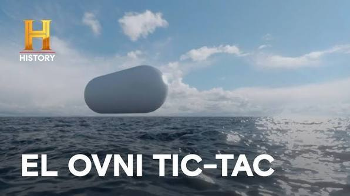
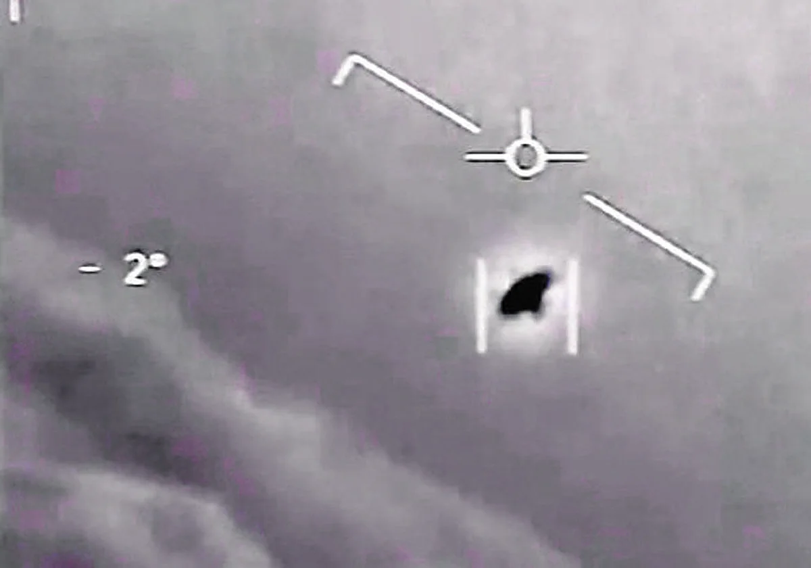
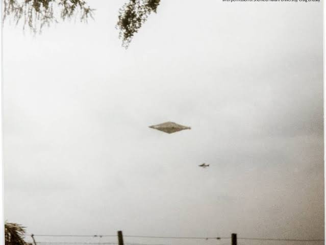
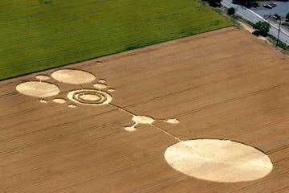

🛸 Casos OVNI Desclasificados
Caso Roswell (1947)
.jpg)
En julio de 1947 en Roswell Nuevo México un objeto no identificado se estrelló en un rancho el ejército estadounidense inicialmente afirmó haber recuperado los restos de un platillo volador pero luego rectificaron diciendo que era un globo meteorológico Este cambio abrupto alimentó las teorías de Conspiración y rumores sobre un encubrimiento de un encuentro extraterrestre décadas después se desclasificó información indicaba que el objeto era parte del proyecto mogul un programa secreto de vigilancia de la Guerra Fría aún así Roswell se convirtió en un icono de la cultura ovni y teorías extraterrestres.
Caso Tic Tac (2004)

Un objeto con forma de caramelo tic tac. En 2004, frente a las costas de California, pilotos de la Marina de Estados Unidos fueron enviados a interceptar un objeto extraño. Lo describieron como un tic tac blanco de unos 12 m, capaz de acelerar, frenar y cambiar de dirección en fracciones de segundo, sin alas ni motores visibles. El radar lo captó moviéndose de forma imposible para cualquier aeronave conocida. Años después, el Pentágono confirmó la autenticidad del video. Este caso no solo fue una anécdota, abrió investigaciones oficiales sobre fenómenos aéreos no identificados en el gobierno estadounidense.
📸 Galería de Evidencias


